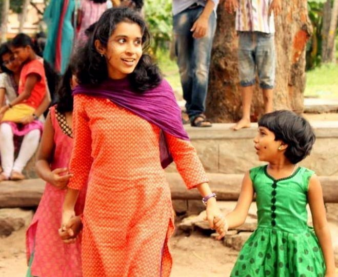

AI Website Generator
28th June, 2015. 5:47 pm. My phone beeps and the notification light blinks.
“Dear MADster,
Yes, you heard that right. I said MADster. Congratulations and welcome to the MAD family. We are pleased to confirm that you have been selected for the Ed Support Program as a teaching volunteer.”
Wow.
Like the majority of Science stream students here, I too had thoughts on how wonderful it would be to take the road less traveled – but was unable to figure out where my path lay – and ended up in Engineering. Life was so humdrum that I yearned to do something that’d make me happy, something different. And that’s when I came to know about Make a Difference.
For those who are unfamiliar with it, Make a Difference (MAD) is a ‘non-profit organization that envisions mobilizing young leaders to ensure equitable outcomes for children in shelter homes across India’. We reach out to about 4,250 children in 77 shelter homes in 23 cities through a strong volunteer network. MAD provides them with support in their academics, guides them to dream big and makes them realize what they are really capable of so that their ambitions are not limited by their circumstances. The main focus of MAD is empowering children through better emotional health, life skills, exposure, academic support, transition readiness and after care, improving the ecosystem around them and enabling the social sector. 92% of the children in shelter homes typically drop out of school by the age of 18. Since its induction in 2006, MAD has been trying to reverse the trend for those who have been through programs like Ed Support, Discover, Propel and Dream Camps funded by donations and sponsors.
And that’s with the facts. Inductions and training followed the confirmation email and the classes began – 3 hours every Sunday at one of the centers in Trivandrum. I was allotted 2 kids of 7th standard and I started planning my classes with high hopes of making them fluent in the language and having fun-filled classes.
Once the classes began, I realized that the task at hand was not an easy one. Lesson plans never worked out and solutions had to be devised on-the-go. My kids, Priya* and Chinnu* were slightly slow learners and they struggled with English and hated the subject as a result. Priya couldn’t read at all as she did not have proper primary schooling while Chinnu was too shy and was scared to make mistakes and never gave it a try. Textbooks were out of the question and story books and sound charts took their place. They started reading word by word and gradually coining sentences. An hour during every class was set apart for reading and it really worked. By the end of the year, they could read with a little help here and there. Talking helped to bring Chinnu out of her shell. Being short had always had its perks and they were happy knowing that they’d be taller than me in a year and thus I was one among them. And one day Chinnu proudly said, “Chechi ini pokkam veykoola. Pakshe njan veykkum, ennitt Police aavum” [I’ll be taller than you, and become a police officer]. I couldn’t have been happier. I have neither made them masters in the language nor can they speak a few lines in English without mistakes. But they have improved, they can read sentences and they can figure out the spellings from the sounds of the letters.
MAD has helped me to widen my horizons and to help me view the different perspectives of life. Planning and review sessions before and after each class gave new ideas and problem solving capabilities. Dream Camps turned out to be an experience beyond words. In here, I have met some amazing people too and made friends for life! The three values which MAD believes in are Leadership through Ownership, Cause above Self and Sense of Family and we have real instances of them. Each of us has had our own share of awe filling moments and happiness. We have come together for a common cause and it makes the all the more bond stronger.
In the words of Anurag Pramod, one of our volunteers, “When I think of MAD, the thought that comes to mind first is that of that smile on their [children’s] faces – that smile they have when they see their teacher coming for class, even though they may not show it, that excitement they feel, even though they may deny it. We are working towards a bigger end. And we have a long way to go before we get there. What really makes the journey worth it, is, as my friend said, being able to tell the kids that you will be there, next week too, and watch their eyes light up.”
My kids smile and come running to me and hug me each time they see me. They may not have the slightest interest to sit and study at times but they do come up with compromises, because they understand I’m there just for them. At the end of disappointing classes when I could just teach how to spell a word or two, they’d come up to me and say, “Chechi, innu mood ilaayrunnu. Adutha classil nalla kuttykal aaytt padikaame. Promise!”[Next class we’ll be good children and study well, Promise!] and whether they kept it or not, that was enough for me to head back to them the next weekend with new activities planned. The difference made may be too small to notice but giving it a try is what matters. It’s been a year since I have been inducted as an English teacher in the Trivandrum chapter of MAD and I owe it to my friends, Nikhil and Sudu, my seniors at school, who believed I could make a difference and inspired (and pushed) me to be a part of the organization and my parents, for letting me do this.
Being a MADster, the past year has been one of experiences, more lessons learnt than taught.
Thank you MAD. :’)
* Names changed.
AI Website Generator